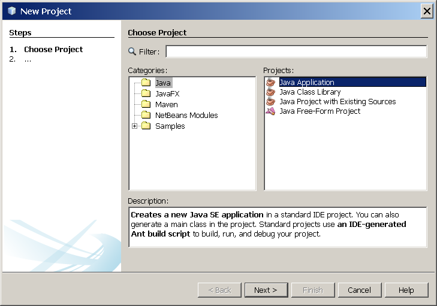
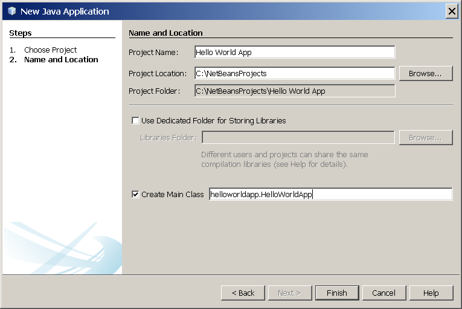
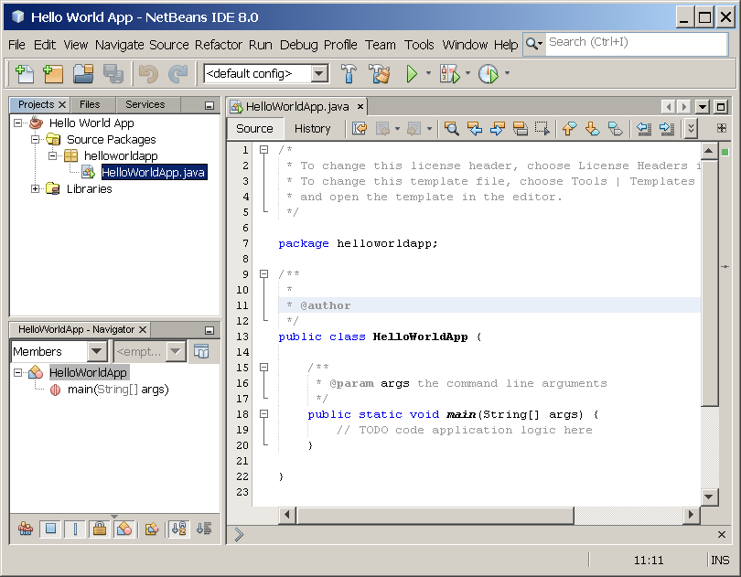

Lesson: The "Hello World!" Application
"Hello World!" for the NetBeans IDE
It's time to write your first application! These detailed instructions are for users of the NetBeans IDE. The NetBeans IDE runs on the Java platform, which means that you can use it with any operating system for which there is a JDK available. These operating systems include Microsoft Windows, Solaris OS, Linux, and Mac OS X.
A Checklist

To write your first program, you'll need:
-
The Java SE Development Kit (JDK 7 has been selected in this example)
- For Microsoft Windows, Solaris OS, and Linux: Java SE Downloads Index page
- For Mac OS X: developer.apple.com
-
The NetBeans IDE
- For all platforms: NetBeans IDE Downloads Index page
Creating Your First Application
Your first application, HelloWorldApp, will simply display the greeting "Hello World!" To create this program, you will:
-
Create an IDE project
When you create an IDE project, you create an environment in which to build and run your applications. Using IDE projects eliminates configuration issues normally associated with developing on the command line. You can build or run your application by choosing a single menu item within the IDE.
-
Add code to the generated source file
A source file contains code, written in the Java programming language, that you and other programmers can understand. As part of creating an IDE project, a skeleton source file will be automatically generated. You will then modify the source file to add the "Hello World!" message.
-
Compile the source file into a .class file
The IDE invokes the Java programming language compiler
(javac), which takes your source file and translates its text into instructions that the Java virtual machine can understand. The instructions contained within this file are known as bytecodes. -
Run the program
The IDE invokes the Java application launcher tool (
java), which uses the Java virtual machine to run your application.
Create an IDE Project
To create an IDE project:
-
Launch the NetBeans IDE.
-
On Microsoft Windows systems, you can use the NetBeans IDE item in the Start menu.
-
On Solaris OS and Linux systems, you execute the IDE launcher script by navigating to the IDE's
bindirectory and typing./netbeans. -
On Mac OS X systems, click the NetBeans IDE application icon.
-
-
In the NetBeans IDE, choose File | New Project....

NetBeans IDE with the File | New Project menu item selected.
-
In the New Project wizard, expand the Java category and select Java Application as shown in the following figure:
 NetBeans IDE, New Project wizard, Choose Project page.
-
In the Name and Location page of the wizard, do the following (as shown in the figure below):
-
In the Project Name field, type
Hello World App. -
In the Create Main Class field, type
helloworldapp.HelloWorldApp.
 NetBeans IDE, New Project wizard, Name and Location page.
-
-
Click Finish.
The project is created and opened in the IDE. You should see the following components:
-
The Projects window, which contains a tree view of the components of the project, including source files, libraries that your code depends on, and so on.
-
The Source Editor window with a file called
HelloWorldApp.javaopen. -
The Navigator window, which you can use to quickly navigate between elements within the selected class.
 NetBeans IDE with the HelloWorldApp project open.
Add JDK 8 to the Platform List (if necessary)
It may be necessary to add JDK 8 to the IDE's list of available platforms. To do this, choose Tools | Java Platforms as shown in the following figure:
Selecting the Java Platform Manager from the Tools Menu
If you don't see JDK 8 (which might appear as 1.8 or 1.8.0) in the list of installed platforms, click Add Platform, navigate to your JDK 8 install directory, and click Finish. You should now see this newly added platform:
The Java Platform Manager
To set this JDK as the default for all projects, you can run the IDE with the --jdkhome switch on the command line, or by entering the path to the JDK in the netbeans_j2sdkhome property of your INSTALLATION_DIRECTORY/etc/netbeans.conf file.
To specify this JDK for the current project only, select Hello World App in the Projects pane, choose File | Project Properties (Hello World App), click Libraries, then select JDK 1.8 in the Java Platform pulldown menu. You should see a screen similar to the following:
The IDE is now configured for JDK 8.
Add Code to the Generated Source File
When you created this project, you left the Create Main Class checkbox selected in the New Project wizard. The IDE has therefore created a skeleton class for you. You can add the "Hello World!" message to the skeleton code by replacing the line:
// TODO code application logic here
with the line:
System.out.println("Hello World!"); // Display the string.
Optionally, you can replace these four lines of generated code:
/** * * @author */
with these lines:
/** * The HelloWorldApp class implements an application that * simply prints "Hello World!" to standard output. */
These four lines are a code comment and do not affect how the program runs. Later sections of this tutorial explain the use and format of code comments.
Be Careful When You Type


Note: Type all code, commands, and file names exactly as shown. Both the compiler (
javac) and launcher (java) are case-sensitive, so you must capitalize consistently.HelloWorldApp is not the same as helloworldapp.
Save your changes by choosing File | Save.
The file should look something like the following:
/*
* To change this template, choose Tools | Templates
* and open the template in the editor.
*/
package helloworldapp;
/**
* The HelloWorldApp class implements an application that
* simply prints "Hello World!" to standard output.
*/
public class HelloWorldApp {
/**
* @param args the command line arguments
*/
public static void main(String[] args) {
System.out.println("Hello World!"); // Display the string.
}
}
Compile the Source File into a .class File
To compile your source file, choose Run | Build Project (Hello World App) from the IDE's main menu.
The Output window opens and displays output similar to what you see in the following figure:
Output window showing results of building the HelloWorld project.
If the build output concludes with the statement BUILD SUCCESSFUL, congratulations! You have successfully compiled your program!
If the build output concludes with the statement BUILD FAILED, you probably have a syntax error in your code. Errors are reported in the Output window as hyperlinked text. You double-click such a hyperlink to navigate to the source of an error. You can then fix the error and once again choose Run | Build Project.
When you build the project, the bytecode file HelloWorldApp.class is generated. You can see where the new file is generated by opening the Files window and expanding the Hello World App/build/classes/helloworldapp node as shown in the following figure.
Files window, showing the generated .class file.
Now that you have built the project, you can run your program.
Run the Program
From the IDE's menu bar, choose Run | Run Main Project.
The next figure shows what you should now see.
The program prints "Hello World!" to the Output window (along with other output from the build script).
Congratulations! Your program works!
Continuing the Tutorial with the NetBeans IDE
The next few pages of the tutorial will explain the code in this simple application. After that, the lessons go deeper into core language features and provide many more examples. Although the rest of the tutorial does not give specific instructions about using the NetBeans IDE, you can easily use the IDE to write and run the sample code. The following are some tips on using the IDE and explanations of some IDE behavior that you are likely to see:
-
Once you have created a project in the IDE, you can add files to the project using the New File wizard. Choose File | New File, and then select a template in the wizard, such as the Empty Java File template.
-
You can compile and run an individual file (as opposed to a whole project) using the IDE's Compile File (F9) and Run File (Shift-F6) commands. If you use the Run Main Project command, the IDE will run the file that the IDE associates as the main class of the main project. Therefore, if you create an additional class in your HelloWorldApp project and then try to run that file with the Run Main Project command, the IDE will run the
HelloWorldAppfile instead. -
You might want to create separate IDE projects for sample applications that include more than one source file.
-
As you are typing in the IDE, a code completion box might periodically appear. You can either ignore the code completion box and keep typing, or you can select one of the suggested expressions. If you would prefer not to have the code completion box automatically appear, you can turn off the feature. Choose Tools | Options | Editor, click the Code Completion tab and clear the Auto Popup Completion Window checkbox.
-
If you want to rename the node for a source file in the Projects window, choose Refactor from IDE's main menu. The IDE prompts you with the Rename dialog box to lead you through the options of renaming the class and the updating of code that refers to that class. Make the changes and click Refactor to apply the changes. This sequence of clicks might seem unnecessary if you have just a single class in your project, but it is very useful when your changes affect other parts of your code in larger projects.
-
For a more thorough guide to the features of the NetBeans IDE, see the NetBeans Documentation page.